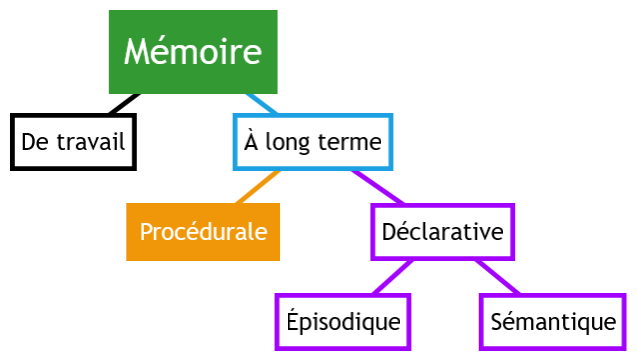

Pensée computationnelle avec JavaScript
Mattia A. Fritz
TECFA, Université de Genève
Problème
Combien pourra-t-il reconstituer de cierges avec les neuf bouts de cierges qu'il a récupérés ce matin dans l'abbatiale ?
Solution cognitive
- Avec 9 bouts, il peut reconstituer 3 cierges.
- En brûlant les 3 cierges, il récupère 3 nouveaux bouts.
- Avec ces 3 bouts supplémentaire, il peut reconstituer 1 nouveau cierge (récursivité).
Au total, il récupère 4 cierges !
Solution computationnelle
Implémentation en code JavaScript.
//Set the initial number of pieces available
var numberOfPieces = 9;
//How many pieces are needed for a candle?
var piecesRequired = 3;
//Set a variable to be incremented for each new candle
var totalCandlesObtained = 0;
//Go on until the number of candles can be divided by the pieces
while (numberOfPieces / piecesRequired >= 1) {
//At each cycle define the new number of candles
numberOfPieces = Math.floor(numberOfPieces / piecesRequired);
//Add it to the previous total
totalCandlesObtained += numberOfPieces;
}
//Print the result
console.log('TOTAL:' + totalCandlesObtained + ' candles');
Récursivité
Généralisation du code
Au total, il obtient {{totalCandles}} cierges.
Connaître la récursivité dans le codage facilite la résolution cognitive du problème ?
Pensée computationnelle est ?
Dans la littérature scientifique, les différentes définitions de la pensée computationnelle peuvent être placées sur un continuum entre deux pôles opposés :
Capacités
Individuelles
Interaction
Personne-Machine
Processus universel
— Aho 2012, p. 832
Traduction libre
Processus délimité
— Denning, 2016, p. 33
Traduction libre
Troisième dimension sociale

Processus émergent
— Fritz, 2019
Définition provisoire
Informatique : science sociale ?
Mouvement bi-directionnel
L'informatique regarde aux sciences sociales, et les sciences sociales utilisent de plus en plus l'informatique.
Informatique
Sciences sociales
Définition pragmatique
— Fritz & Schneider, 2019
Composantes principales

Décomposition
Diviser un problème complexe ou un système en petites parties plus simples à gérer.
/*
* Use pseudo-code to identify the main steps to solve the problem
*/
// Set the initial state of the game
// Apply the main rules of the game
// Update the score and check if the game is over
Reconnaissance de pattern
Identifier des similarités entre problèmes ou à l’intérieur du même problème donné.
function1 () {
console.log("Hello world!")
}
function2 () {
console.log("Hello JavaScript!")
}
// Identify the pattern and apply it
function hello(name) {
console.log("Hello " + name + "!")
}
hello("world");
hello("JavaScript");
Abstraction
Se focaliser exclusivement sur les parties importantes du problème.
let learner = {
nickname: "Computational Geek",
initialLevel: "beginner",
currentLevel: "intermediate",
aimedLevel: "advanced",
chanceOfSuccess: 0.8
}
Algorithmes
Trouver une solution à travers une règle composée par une série d’étapes.
// Reverse the order of a word
function reverseWord(word) {
return word.split('').reverse().join('');
}
reverseWord("JavaScript"); //Donne "tpircSavaJ"
Mais...
Ces informations ne sont pas suffisantes pour apprendre et tirer profit de la pensée computationnelle. Il est nécessaire de combiner les connaissances déclaratives et procédurales.
Comment ?
Il existe principalement trois modalités d'enseignement de la pensée computationnelle qui peuvent être combinées :
- Activités débranchées
- Environnements avec blocs de code
- Langages de programmation textuels
Plus de recherche nécessaire sur bénéfices et transfert entre
différentes modalités.
Activités débranchées
Activités qui n'utilisent pas un dispositif numérique, mais une modélisation abstraite du fonctionnement.

Programming Boty de L. Boufflers et S. Linh Quang.
Blocs de code
Environnements graphiques qui emboîtent des instructions en forme de briques.
 Capture d'écran de Scratch.
Crédits :
MaranerG.isera-rovereto,
CC BY-SA 4.0, via Wikimedia Commons
Capture d'écran de Scratch.
Crédits :
MaranerG.isera-rovereto,
CC BY-SA 4.0, via Wikimedia Commons
Langages de programmation
Utiliser une notation conventionnelle destinée à formuler des algorithmes et produire des programmes informatiques qui les appliquent.

Informatique *
Sciences sociales
* Pas dans toutes les filières
Niveaux computationnels
-
Technique
L'objectif de la computation est de résoudre un problème -
Interaction personne-technologie
L'objectif de la computation est d'accomplir une tâche -
Intra- et Inter-personnel
L'objectif de la computation est d'apporter un changement comportemental qui soit bénéfique
Exemple du thumbs-up/down
Technique
| post_id | thumb |
|---|---|
| 6272 | 0 |
| 6272 | 1 |
| 6272 | 1 |
| 6272 | 0 |
Interaction
Un simple clique...
Comportement
DésirabilitéExclusion
Depression
...
Terrain difficile
Se trouver entre deux systèmes computationnels complexes et distincts, en plus distribués !
")
Pour aller plus loin
Les concepts abordés dans cette présentation sont traités de manière plus exhaustive dans Initiation à la pensée computationnelle avec JavaScript sur EduTechWiki.
EduTechWiki est un wiki sur la technologie éducative hébergé est maintenu par TECFA, une unité de l'Université de Genève, depuis 2006.

{kind=link}